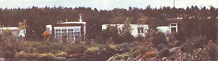
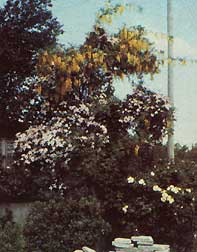
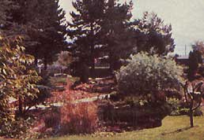

More than 20 years ago, Peter and Eileen Caddy and Dorothy Maclean moved into a small trailer in the Findhorn Bay Caravan Park in northeast Scotland, and promptly planted a garden. (See "Findhorn: A Bright Light in a Dark World", MOTHER NO. 71, page 32.) The extremely large vegetables that grew there attracted worldwide attention, but it was the trio's vision of a new society-one which would relate to people, the environment, and global needs ... with love, understanding, and a sense of wholeness-that eventually resulted in the formation of a flourishing international community in this unlikely spot.
Over the years, the Findhorn Foundation has obtained a number of beautiful pieces of property upon which to house its members and guests, but the "historic" Caravan Park-while largely occupied by Findhorn residents-remained in the hands of its original owners. And, until now, the housing there has, by law, been limited to temporary buildings (trailers and prefabricated dwellings). However, in January 1983, the community's Trustees were able to sign an agreement of purchase (for £380,000, or roughly $575,000 at the current exchange rate), and the final transaction to buy the Caravan Park's 22 acres is scheduled to take place on November 17, 1983 ... Findhorn's 21st birthday!
Once they assume ownership, the fine folks at Findhorn will be able to apply for a change of land-use statutes, and several prominent British and American architects have already helped draw up an initial building plan. All of this activity will eventually culminate-it's hoped-in the development of a truly planetary village, one that will combine the essential principles of community, working with nature, appropriate technology, economic viability, and spiritual awareness.
Those of our readers who have traveled to Findhorn-either on their own or by participating in our tours there-know how both plants and people thrive in the nurturing, cheerful, and beautiful environment its members have created. And those visitors also know that the community often involves itself in tremendous undertakings based on faith alone ... faith in the planet's future, and in all those people around the world who share their vision. This exciting move to purchase the Caravan Park has been no exception.
If you'd like to be a part of this endeavor, you can write for information about the purchase, or send general donations, to The Treasurer, Dept. TMEN, Findhorn Foundation, Forres, IV36 OTZ, Scotland. (Make your check/postal order/international money order payable to Findhorn Foundation, Caravan Park Fund.)
To make a tax-deductible contribution, you can send your donation to The One Earth Foundation, a public nonprofit corporation that allows U.S. residents to support "New Age" activities throughout the world. While donors may not legally use The One Earth Foundation to channel this money directly to Findhorn, they can indicate their preference for the use of such funds. The One Earth directors will, in turn, bear in mind the intent of the contributions when allocating the funds available (they can't, however, guarantee where the money will go). Inquiries and donations should be addressed to The One Earth Foundation, Inc., c/o Sloane and Hinshaw, Inc., Dept. TMEN, 145 East 74th Street, Suite 1 C, New York, New York 1002 1.
Appropriately, the ecologically conscious Findhorn Foundation will be the host-from October 3 to 15, 1983-to the third session of the World Wilderness Congress ... which will convene on the doorstep of one of the most beautiful, extensive, and fought-over wilderness areas in western Europe. Here, ecologists, hunters, miners, farmers, artists, politicians, and business people will have the opportunity to advance their interests, and to examine how the development of this planet's resources can go hand in hand with the conservation and management of our wilderness areas.
This international gathering will hear speakers discuss the rain forests of India, the African wilderness, the wildlife of South America, and the particular ecologies of other remote areas as well. The congress will also be addressed by Colonel Sir Laurens van der Post (writer and explorer, United Kingdom), G. Ray Arnett (current Assistant Secretary of the Interior, United States), Dr. Morton Boyd (director, Nature Conservancy Council, Scotland) Heinz Steinmann (wilderness artist, Australia), Ian Player (director, Wilderness Leadership School, Republic of South Africa), and Felipe Benavides (president of PRODENA, Peru).
In addition, a wide variety of journeys into the Scottish wilderness are being planned for the week after the congress. For example, a four-day "Highland and Island Experience" will cover the wild northwest Highlands, the beautiful Hebridean Isle of Skye, and Loch Ness. Other trips include hikes of varying duration in such areas as the Glen Aftic Forest (the largest remaining remnant of the true Caledonian forest) and the Cairngorm Mountains, as well as one-day trips to historic Scottish castles, a jaunt up the Spey Valley on the famous Scottish Whiskey Trail, and more.
The maximum number of delegates is limited to 250, with quotas allocated for the different continents. The congress registration fee is £160. For more information, write to the Congress Secretariat, Dept. TMEN, 3rd World Wilderness Congress, The Park, Forres, IV36 OTZ, Scotland.
|
 |
 |
 |